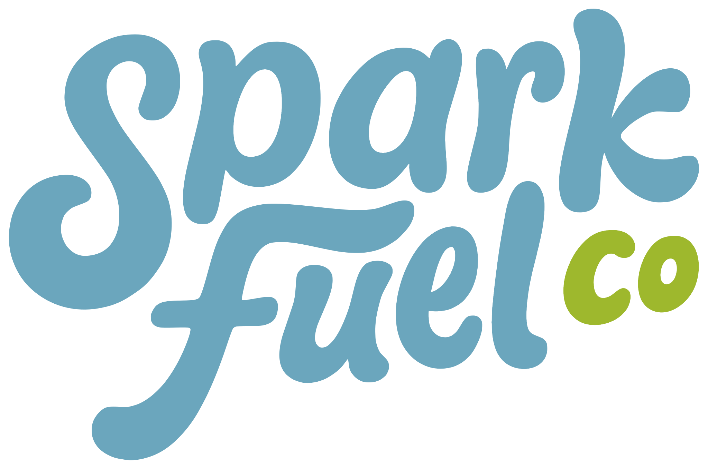

The hero is still the rounded Spark Fuel Co lettering, teal with a small olive “co.”
The rest of the site is night, chartreuse, and Bricolage, and the eight-point spark
is already the symbol. These four drop that lettering and the “Co.” I’d build
Inline as the logo. Stack and Streak are louder hero treatments of the same idea.

What’s in the hero now. Soft rounded lettering, in two colors the site never uses.
Teal #6BA6BD
Olive #9EB82D
Night
Spark
Signal
Mist
Chartreuse disappears on mist, so anything that has to live on white — a signature, a sticker, a deck — should flip to night ink.
First the current palette, then the site’s.
01Inline
Start here
Spark
Fuel
The nav lockup, at hero size. Mist type, chartreuse spark as the space between the words. One system from favicon to headline.
Spark
Fuel
About · Services · Work
Spark
Fuel
02Stack
Hero only
Spark
Fuel
Spends the chartreuse on the word Fuel. Poster-like in the hero, clumsy in a nav, so it would sit on top of Inline, not replace it.
Spark
Fuel
About · Services · Work
Spark
Fuel
03Mark
Symbol first
Spark Fuel
The favicon, scaled up, with the name set small underneath. Clearest as a stamp. The star is a common shape, so this only works if the double spark stays exact.
Spark Fuel
About · Services · Work
Spark Fuel
04Streak
Motion
Spark Fuel
The name in mist, then a chartreuse line that ends in the spark. Same gesture as the scroll streaks. The line gets thin in the nav, so Inline is still the small-size version.
Spark Fuel
About · Services · Work
Spark Fuel
Nothing on the live site has changed. If one of these feels close, we can put it in the hero and the nav and tune the spacing there.